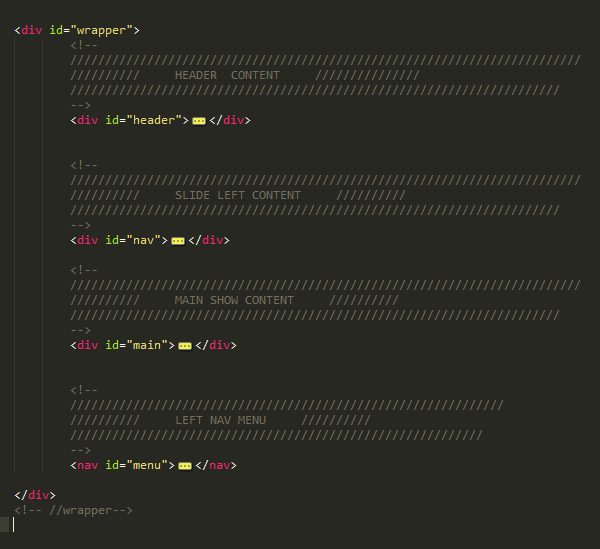
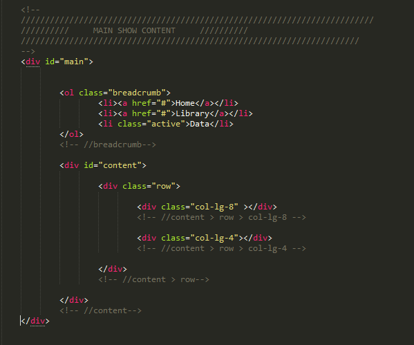
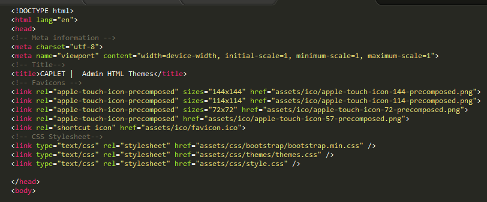

“Caplet Admin HTML Theme” Documentation
by “Pinyo Pungfueng” v1.1.4
“CAPLET”
Thank you for purchasing my theme. If you
have any questions that are beyond the scope of this help file, please
feel free to email via my user page contact form here.
Thanks so much!
Table of Contents
- HTML Structure
- CSS Files and Structure
- JavaScript
- Sources and Credits
- PHP Code Explanation
A) HTML Structure - top
This template layout is responsive with two columns, based on Bootstrap
Framework 3.02 from Twitter. Here is the general structure.
Wraper-Structure

Main-Structure
All of the information within the main content area is nested within a div
with an id of #main

B) CSS Files and Structure - top
This template includes a number of CSS files that are used for display
the website. All CSS files, can be found in the Template's assets/css/ folder
and some plugins folder.
The CSS file :
- bootstrap.min.css - It includes the based on Bootstrap
Framework from Twitter ( Original code )
- themes.css - modify from based on Bootstrap Framework
3.02 for this theme,
- styles.css - This style sheet contains specific styling
for the template structure. It is the base styles color , text styles,
header and include style sheet some plugin
Main CSS -Include

All images used in the demo are not distributed with the theme. They are
all licensed under Creative Commons and credited to their respective creator/owner.
C) JavaScript - top
Caplet Themes uses the following javascript files:
- Library Jquery
- jquery.min.js
- jquery.ui.min.js
- Library Bootstrap
- Bootstrap v3.0.2
- Hammer.JS
- Bootstrap Hover Dropdown
- Bootstrap-progressbar
- Bootstrap-modal
- Bootstrap-tabdrop
- Modernizr Library For HTML5 And CSS3
- Library Form plugins
- Textarea Elastic (Autosize)
- Bootstrap-markdown
- iCheck
- Bootstrap
- Bootstrap-tagsinput
- Parsley validate form
- Colpick Color Picker
- Bootstrap-colorpalette
- Bootstrap-maxlength
- Bootstrap-select
- Bootstrap: fileinput
- Notification8
- jQuery Slider Plugin
- Slider Pagination Concept (modern slide)
- jQuery FullScreen Plugin
- Bootstrap wizard plugin
- HTML Loading canvas
- Treeview
- Jcrop
- Isotope
- Library Datetime plugins
- Library Chart
- flot
- flot.pie
- flot.categories
- flot.resize
- flot.stack
- graphtable
- flot.tooltip
- jQuery Knob
- jquery.sparkline
- easyPieChart
- caplet.custom.js ( Library Themes Customize )
D) Sources and Credits - top
I've used the following images, icons or other files as listed.
jQuery & Plugins
- jQuery Autosize [ Link ]
- jQuery color plugin xcolor [ Link ]
- Bootstrap plugin for markdown editing [ Link ]
- Bootstrap-switch [ Link ]
- Bootstrap-tagsinput [ Link ]
- iCheck [ Link ]
- Parsley dist/parsley.min.js build version 1.2.2 Javascript forms validation.
[ Link ]
- Bootstrap-select [ Link ]
- Bootstrap: fileinput [ Link ]
- bootstrap wizard plugin [ Link ]
- jQuery plugin: Treeview [ Link ]
- Hammer [ Link ]
- Tab drop for Bootstrap [ Link ]
- Bootstrap-progressbar [ Link ]
- Bootstrap-modal
- Flot Chart and Flot Plugin[ Link ]
- jQuery-Knob [ Link ]
- jQuery.sparkline 2.1.2 [ Link ]
- Ckeditor [ Link ]
- DataTables [ Link ]
- bootstrap-datetimepicker [ Link ]
- elFinder [ Link ]
- Fullcalendar/ [ Link ]
- swipebox [ Link ]
- Gmap [ Link ]
- M Menu [ Link ]
- and All Plugin
E) PHP Files - top
I've included three php file :
- data/checklogin.php - This pages is check login pages
- data/crop-imges.php - images crop example
- load_img.php - each image folder show in gallery
Once again, thank you so much for purchasing this theme. As I said at the
beginning, I'd be glad to help you if you have any questions relating to
this theme. No guarantees, but I'll do my best to assist. If you have a more
general question relating to the themes on ThemeForest, you might consider
visiting the forums and asking your question in the "Item Discussion" section.
Pinyo Pungfueng
Go To Table of Contents